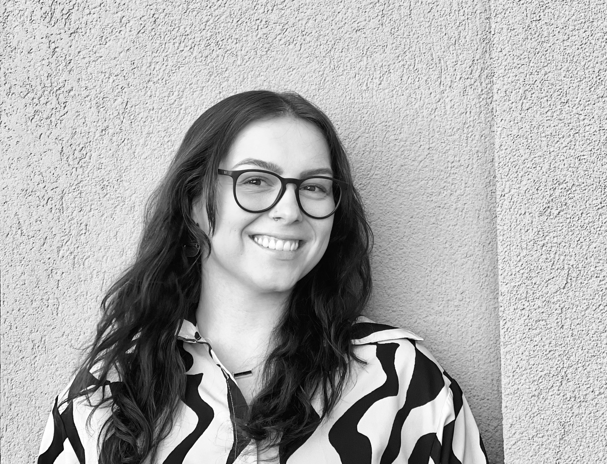

PORTFOLIO
Computational designer working at the intersection of biodesign,
living materials, architectural research, and creative technology.

SCROLL ↓
Computational designer working at the intersection of biodesign,
living materials, architectural research, and creative technology.
As an architectural and computational designer, I'm interested in exploring the intersection of ecological systems, speculative futures, and the built environment through a sustainability lens — working at the intersection of biodesign, living materials, architectural research, and creative technology. My practice is grounded in a systems-thinking approach, using design technology workflows to bridge the gap between biological processes and architectural form.
I hold a Master of Science in Computational Design Practices from Columbia University, with a focus on biocomputational design methods and the integration of living systems into architectural frameworks. My thesis investigates how fungal networks and organic growth patterns can inform adaptive building systems through environmental sensing, treating fabrication and material research as extensions of regenerative design, and positioning architecture as a tool for communicating science through design. My recent work explores building information systems, spatial user experience design, urban mapping technologies, and data-driven approaches to sustainable architecture, alongside a more-than-human approach to architecture that considers non-human life as active participants in the design process.
I have a professional background in residential design as well as construction management. I hold an M.Arch from Pratt Institute as well as a B.S. in Urban Planning + Design from Rutgers University. In order to develop within this industry and commit to promoting sustainability, I achieved a LEED Green Associate accreditation and am on the path to becoming a licensed Architect. I advocate for environmentally conscious design practices to shape a more sustainable future.
